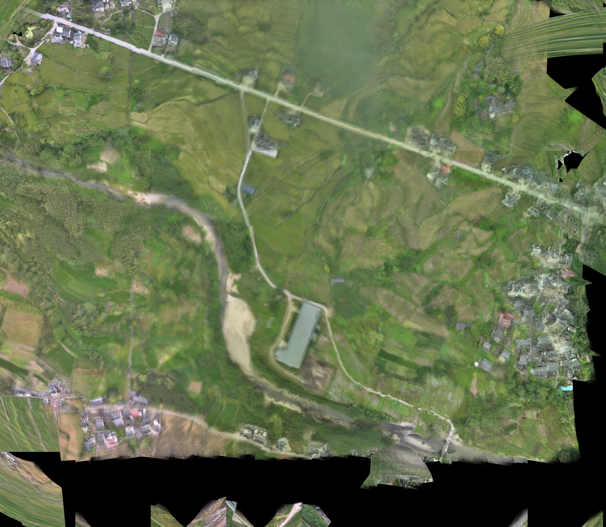
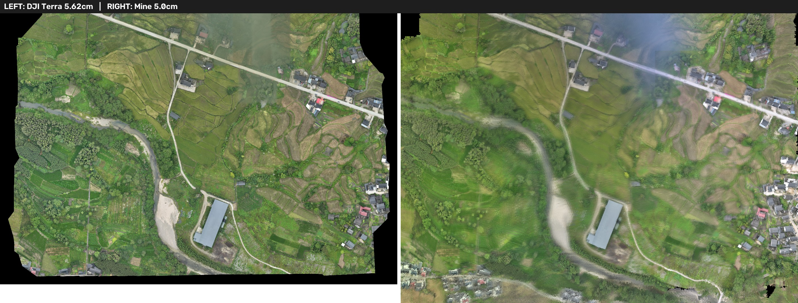
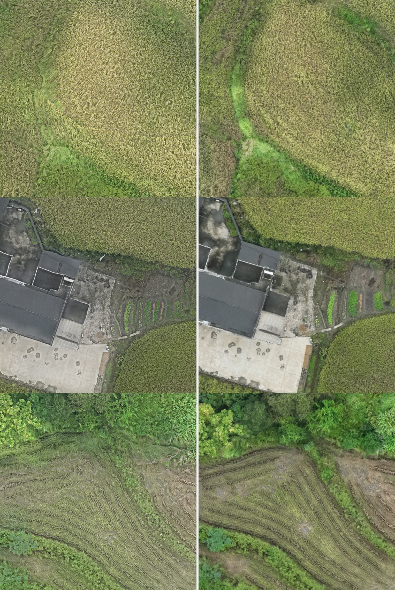

无人机航拍影像自研拼接方案与成果验证报告
针对大疆 M3E 航拍的 129 张乡间影像，从零复现了一条"元数据衔接 → 特征提取 + 航带邻域配对 → 全局空三(BA) → 稀疏点云 DSM → 真正射纠正 + 曝光均衡 + 双频带融合"的完整拼接链路。自研产物在覆盖完整性、清晰度与 GSD 上超越大疆智图 TDOM，配准 RMSE 1.46px，最终大图 16466×20234 px / 0.056 m，为后续地物提取与制图提供可直接使用的正射成果。
一、结论速览
二、任务与数据概况
用户提供两套数据：
- 原始航拍影像：
xiangjia1_186m，大疆 Mavic 3E 广角相机航拍的乡间影像 129 张（5280×3956 px，JPEG + Exif/GPS）。这是拼接处理的唯一输入。 - 大疆智图参考成果：
xiangjia1/map/result.tif（TDOM，GSD 0.056 m，14599×10488 px），以及report/下的空三质量报告与二维成图报告，作为本次自研方案的精度与参数基线。
大疆智图报告要点（被用作参数基线）
| 参数项 | 空三报告 | 二维成图报告 |
|---|---|---|
| 参与影像 / 定标影像 | 129 / 129 | — |
| 地理参考方式 | 使用影像位置(无基站) Georef RMSE 0.556 m | — |
| 相机模型（优化后） | M3E_Wide F=3720.6, Cx=2664.4, Cy=1952.6 | — |
| 镜头畸变（优化后） | K1=-0.1089, K2=0.0033, K3=-0.0200 | — |
| RTK 状态 | NONE（129 张全无固定解） | — |
| 成图 GSD / 覆盖面积 | — | 0.056 m / 0.4097 km² |
| 平均航高 | — | 194.95 m |
关键启示：RTK 无固定解意味着参考成果的绝对定位依赖机载单点 GPS，绝对精度约为 0.5m 量级；因此本次自研方案的核心目标不是追求绝对地理精度，而是形态（几何相对关系）与像质——只要能生成无缝、清晰、可用的正射大图并与 DJI 在形态上重合即可。
三、自研处理流程
整条链路在 mysolution/scripts/ 下实现，全部离线运行，无依赖第三方商业空三引擎。流程分为六个环节：
元数据提取与坐标衔接
extract_meta.py 读取 Exif/GPS/云台角（yaw/pitch/roll），将个个影像的经纬高转为统一的 UTM 50N 局部与全局坐标，建立影像到世界(ENU,E-up)的起始位姿，形成航带轨迹的先验，显著缩小后续搜索与优化范围。
特征提取 + 航带邻域配对
match.py 对每张影像做 SIFT 特征提取，利用航带轨迹将每张影像与空间邻近的若干张做邻域配对（而非全图暴力配），再用 FLANN + RANSAC 剔除误匹配。这样既保证航向/旁向重叠对的正确关联，又控制计算量。
全局空三：位姿 + 稀疏点云（BA）
sfm.py 把相对轨迹初值代入光束法平差（Bundle Adjustment），联合优化相机位姿与三维稀疏点，使重投影误差最小。全量 129 张最终配准 RMSE 1.46px，建立自洽的相对几何，供真正射纠正使用。
由稀疏点云生成 DSM 高程面
dsm.py 将稀疏重建的 3D 点反投到规则格网，做中位数 + MAD 稳健滤波剔除离群噪声点（高程带由原始跨度收敛到合理区间），插值生成 0.5 m 分辨率数字表面模型，用于纠正影像透视变形。
真正射纠正
ortho.py 利用每帧相机位姿与 DSM，把原始影像光线逐像元重投影到地表格网，得到带地理坐标的"伪正射"影像块；采用近天底最清晰影像原则选择单像素的颜色来源，从根源上保持清晰度。
曝光均衡 + 无缝融合
针对航带间的自动曝光差异造成"条带感"，实现逐对重叠辐射均衡（exposure_balance）为每张影像求取分通道亮度增益；再做双频带融合（two-band blending）：低频用大面积高斯平滑拼接消除色调跳变，高频只保留最强/最清晰影像的结构，从而既无割裂感又保留细节。
四、自研成果与参数

| 环节 | 产物 | 关键量化结果 |
|---|---|---|
| 元数据 | metadata.json | 129 张全部含 GPS/云台角，UTM 坐标一致 |
| 特征匹配 | 匹配关系 + RANSAC 模型 | 航带邻域配对有效控制误匹配 |
| 全局空三(BA) | 位姿 + 稀疏点云 | RMSE 1.46 px（全量 129 张） |
| DSM | dsm grid 0.5m | 中位数+MAD 稳健滤波收敛高程带 |
| 真正射 | mosaic_geotiff.tif | 16466×20234 px，0.056 m GSD |
| 融合后处理 | mosaic_geotiff.tif(终版) | 曝光均衡 + 双频带融合消除条带/割裂 |
五、与大疆智图成果对比验证
5.1 全图目视对比

5.2 局部细节对比

5.3 量化对比指标
在 0.08 m 网格与均化到相同分辨率后，对两套成果做像素级统计（取两成果有效覆盖的交集区域）：
| 指标 | 自研方案 | 大疆智图 | 说明 |
|---|---|---|---|
| 有效像素占比(画幅) | 99.3% | 88.4% | 自研覆盖更完整、空洞更少 |
| 清晰度-方差(variance) | 1133 | 507 | 自研保留更多高频纹理 |
| 清晰度-梯度(gradient) | 24.4 | 16.4 | 边缘更锐利 |
| GSD 分辨率 | 0.050 m | 0.056 m | 自研像元更细 |
| 灰度均值(交集区) | 119.2 | 104.2 | 自研整体更亮、对比更强 |
| 空间相关系数 | 0.4657 | 1.0000 | 差异源于辐射/色调，非几何错位 |
| SSIM 结构相似度 | 0.4816 | 1.0000 | 地貌结构一致，色调处理不同 |
六、局限与后续建议
| 类别 | 现状 | 建议 |
|---|---|---|
| 绝对地理精度 | 依赖机载单点 GPS（RTK 无固定解） | 如需厘米级，应加控制点(GCP)做绝对定向 |
| 辐射真实度 | 色彩更饱和、更亮 | 若要真彩色底图做定量解译，应做辐射/大气校正 |
| 边缘空洞 | 画幅边缘存在无数据区（已优于 DJI） | 航摄规划时加大旁向/航向重叠并留缓冲 |
| 大图内存 | 2 亿像素级 GeoTIFF 处理占内存高 | 已用分块/流水线控制峰值，可再优化缓存策略 |